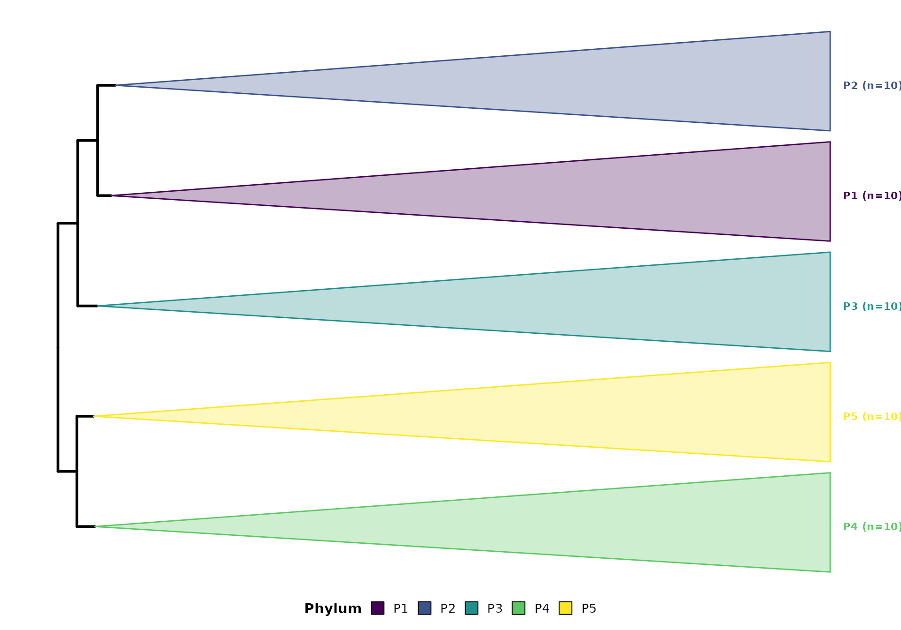

Color-Blind Friendly Palettes
Rclade defaults to the viridis palette, which is: -
Color-blind friendly - Grayscale friendly - Perceptually uniform
library(Rclade)
data(example_tree)
# Default viridis palette
p <- plot_timetree(example_tree, rank = "phylum",
taxonomy_format = "GTDB",
add_timescale = FALSE)
#>
#> ============================================================
#> Rclade: Phylogenetic Tree Visualization
#> ============================================================
#> 2026-10-01T13:50:00.332+00:00 | INFO | Starting plot_timetree pipeline
#> 2026-10-01T13:50:00.333+00:00 | INFO | Tree input : phylo object
#> 2026-10-01T13:50:00.333+00:00 | INFO | Rank : phylum
#> 2026-10-01T13:50:00.333+00:00 | INFO | Layout : rectangular
#> 2026-10-01T13:50:00.334+00:00 | INFO | Unit : auto
#> 2026-10-01T13:50:00.335+00:00 | INFO | Step 1/7: Input validation and reading
#>
#> --------------------------------------------------
#> >> Input Validation
#> --------------------------------------------------
#> 2026-10-01T13:50:00.336+00:00 | INFO | Tips : 50
#> 2026-10-01T13:50:00.337+00:00 | INFO | Internal nodes : 49
#> 2026-10-01T13:50:00.337+00:00 | INFO | Edge lengths range : 40.1579 to 2758.4006
#> 2026-10-01T13:50:00.338+00:00 | INFO | Input validation passed
#> 2026-10-01T13:50:00.339+00:00 | INFO | Timer 'input_reading': 4 ms
#> 2026-10-01T13:50:00.339+00:00 | INFO | Step 2/7: Taxonomy parsing
#> 2026-10-01T13:50:00.340+00:00 | INFO | Using rank-based taxonomy: phylum
#> 2026-10-01T13:50:00.349+00:00 | INFO | Detected format : GTDB
#> 2026-10-01T13:50:00.350+00:00 | INFO | Groups found : 5
#> 2026-10-01T13:50:00.350+00:00 | INFO | Timer 'taxonomy_parsing': 10 ms
#> 2026-10-01T13:50:00.351+00:00 | INFO | Step 3/7: MRCA computation and monophyly check
#> 2026-10-01T13:50:00.351+00:00 | INFO | Checking monophyly and computing MRCA for each group...
#> 2026-10-01T13:50:00.355+00:00 | INFO | Valid groups for collapse: 5 out of 5 total groups
#> 2026-10-01T13:50:00.356+00:00 | INFO | Valid MRCA nodes : 5
#> 2026-10-01T13:50:00.356+00:00 | INFO | Timer 'mrca_computation': 5 ms
#> 2026-10-01T13:50:01.233+00:00 | INFO | Step 4/7: Color generation
#> 2026-10-01T13:50:01.241+00:00 | INFO | Color palette : viridis
#> 2026-10-01T13:50:01.242+00:00 | INFO | Step 5/7: Tree rendering
#> ! # Invaild edge matrix for <phylo>. A <tbl_df> is returned.
#> ! # Invaild edge matrix for <phylo>. A <tbl_df> is returned.
#> 2026-10-01T13:50:01.469+00:00 | INFO | Collapsing 5 clades...
#> 2026-10-01T13:50:01.503+00:00 | INFO | Clade collapse complete
#> 2026-10-01T13:50:01.503+00:00 | INFO | Timer 'tree_rendering': 261 ms
#> 2026-10-01T13:50:01.504+00:00 | INFO | Step 6/7: Timescale integration
#>
#> ============================================================
#> Pipeline Complete
#> ============================================================
#> 2026-10-01T13:50:01.610+00:00 | INFO | Tips : 50
#> 2026-10-01T13:50:01.611+00:00 | INFO | Groups parsed : 5
#> 2026-10-01T13:50:01.611+00:00 | INFO | Groups collapsed : 5
#> 2026-10-01T13:50:01.612+00:00 | INFO | Singleton groups : 0
#> 2026-10-01T13:50:01.612+00:00 | INFO | Skipped (non-monophyletic) : 0
#> 2026-10-01T13:50:01.612+00:00 | INFO | Skipped (root/zero-tip) : 0
#> 2026-10-01T13:50:01.613+00:00 | INFO | Taxonomy format : GTDB
#> 2026-10-01T13:50:01.613+00:00 | INFO | Layout : rectangular
#> 2026-10-01T13:50:01.614+00:00 | INFO | Timescale : disabled
#> 2026-10-01T13:50:01.614+00:00 | INFO | plot_timetree completed successfully
print(p)
Custom Color Mapping
# Custom color mapping for specific groups
p <- plot_timetree(example_tree, rank = "phylum",
taxonomy_format = "GTDB",
add_timescale = FALSE,
color_mapping = c("Proteobacteria" = "#E41A1C",
"Firmicutes" = "#377EB8"))
#>
#> ============================================================
#> Rclade: Phylogenetic Tree Visualization
#> ============================================================
#> 2026-10-01T13:50:02.343+00:00 | INFO | Starting plot_timetree pipeline
#> 2026-10-01T13:50:02.344+00:00 | INFO | Tree input : phylo object
#> 2026-10-01T13:50:02.344+00:00 | INFO | Rank : phylum
#> 2026-10-01T13:50:02.344+00:00 | INFO | Layout : rectangular
#> 2026-10-01T13:50:02.345+00:00 | INFO | Unit : auto
#> 2026-10-01T13:50:02.345+00:00 | INFO | Step 1/7: Input validation and reading
#>
#> --------------------------------------------------
#> >> Input Validation
#> --------------------------------------------------
#> 2026-10-01T13:50:02.346+00:00 | INFO | Tips : 50
#> 2026-10-01T13:50:02.347+00:00 | INFO | Internal nodes : 49
#> 2026-10-01T13:50:02.347+00:00 | INFO | Edge lengths range : 40.1579 to 2758.4006
#> 2026-10-01T13:50:02.348+00:00 | INFO | Input validation passed
#> 2026-10-01T13:50:02.349+00:00 | INFO | Timer 'input_reading': 3 ms
#> 2026-10-01T13:50:02.349+00:00 | INFO | Step 2/7: Taxonomy parsing
#> 2026-10-01T13:50:02.349+00:00 | INFO | Using rank-based taxonomy: phylum
#> 2026-10-01T13:50:02.358+00:00 | INFO | Detected format : GTDB
#> 2026-10-01T13:50:02.358+00:00 | INFO | Groups found : 5
#> 2026-10-01T13:50:02.359+00:00 | INFO | Timer 'taxonomy_parsing': 9 ms
#> 2026-10-01T13:50:02.359+00:00 | INFO | Step 3/7: MRCA computation and monophyly check
#> 2026-10-01T13:50:02.359+00:00 | INFO | Checking monophyly and computing MRCA for each group...
#> 2026-10-01T13:50:02.362+00:00 | INFO | Valid groups for collapse: 5 out of 5 total groups
#> 2026-10-01T13:50:02.362+00:00 | INFO | Valid MRCA nodes : 5
#> 2026-10-01T13:50:02.363+00:00 | INFO | Timer 'mrca_computation': 3 ms
#> 2026-10-01T13:50:02.370+00:00 | INFO | Step 4/7: Color generation
#> 2026-10-01T13:50:02.371+00:00 | INFO | Color palette : viridis
#> 2026-10-01T13:50:02.372+00:00 | INFO | Step 5/7: Tree rendering
#> ! # Invaild edge matrix for <phylo>. A <tbl_df> is returned.
#> ! # Invaild edge matrix for <phylo>. A <tbl_df> is returned.
#> 2026-10-01T13:50:02.496+00:00 | INFO | Collapsing 5 clades...
#> 2026-10-01T13:50:02.528+00:00 | INFO | Clade collapse complete
#> 2026-10-01T13:50:02.529+00:00 | INFO | Timer 'tree_rendering': 156 ms
#> 2026-10-01T13:50:02.529+00:00 | INFO | Step 6/7: Timescale integration
#>
#> ============================================================
#> Pipeline Complete
#> ============================================================
#> 2026-10-01T13:50:02.667+00:00 | INFO | Tips : 50
#> 2026-10-01T13:50:02.668+00:00 | INFO | Groups parsed : 5
#> 2026-10-01T13:50:02.668+00:00 | INFO | Groups collapsed : 5
#> 2026-10-01T13:50:02.668+00:00 | INFO | Singleton groups : 0
#> 2026-10-01T13:50:02.669+00:00 | INFO | Skipped (non-monophyletic) : 0
#> 2026-10-01T13:50:02.669+00:00 | INFO | Skipped (root/zero-tip) : 0
#> 2026-10-01T13:50:02.670+00:00 | INFO | Taxonomy format : GTDB
#> 2026-10-01T13:50:02.670+00:00 | INFO | Layout : rectangular
#> 2026-10-01T13:50:02.670+00:00 | INFO | Timescale : disabled
#> 2026-10-01T13:50:02.671+00:00 | INFO | plot_timetree completed successfully
print(p)Legend Placement
# Inside the plot (default)
p <- plot_timetree(example_tree, rank = "phylum",
taxonomy_format = "GTDB",
add_timescale = FALSE,
legend_position = c(0.05, 0.85))
#>
#> ============================================================
#> Rclade: Phylogenetic Tree Visualization
#> ============================================================
#> 2026-10-01T13:50:03.317+00:00 | INFO | Starting plot_timetree pipeline
#> 2026-10-01T13:50:03.317+00:00 | INFO | Tree input : phylo object
#> 2026-10-01T13:50:03.318+00:00 | INFO | Rank : phylum
#> 2026-10-01T13:50:03.318+00:00 | INFO | Layout : rectangular
#> 2026-10-01T13:50:03.318+00:00 | INFO | Unit : auto
#> 2026-10-01T13:50:03.319+00:00 | INFO | Step 1/7: Input validation and reading
#>
#> --------------------------------------------------
#> >> Input Validation
#> --------------------------------------------------
#> 2026-10-01T13:50:03.320+00:00 | INFO | Tips : 50
#> 2026-10-01T13:50:03.320+00:00 | INFO | Internal nodes : 49
#> 2026-10-01T13:50:03.321+00:00 | INFO | Edge lengths range : 40.1579 to 2758.4006
#> 2026-10-01T13:50:03.322+00:00 | INFO | Input validation passed
#> 2026-10-01T13:50:03.322+00:00 | INFO | Timer 'input_reading': 3 ms
#> 2026-10-01T13:50:03.323+00:00 | INFO | Step 2/7: Taxonomy parsing
#> 2026-10-01T13:50:03.323+00:00 | INFO | Using rank-based taxonomy: phylum
#> 2026-10-01T13:50:03.331+00:00 | INFO | Detected format : GTDB
#> 2026-10-01T13:50:03.332+00:00 | INFO | Groups found : 5
#> 2026-10-01T13:50:03.332+00:00 | INFO | Timer 'taxonomy_parsing': 9 ms
#> 2026-10-01T13:50:03.333+00:00 | INFO | Step 3/7: MRCA computation and monophyly check
#> 2026-10-01T13:50:03.333+00:00 | INFO | Checking monophyly and computing MRCA for each group...
#> 2026-10-01T13:50:03.336+00:00 | INFO | Valid groups for collapse: 5 out of 5 total groups
#> 2026-10-01T13:50:03.336+00:00 | INFO | Valid MRCA nodes : 5
#> 2026-10-01T13:50:03.337+00:00 | INFO | Timer 'mrca_computation': 4 ms
#> 2026-10-01T13:50:03.338+00:00 | INFO | Step 4/7: Color generation
#> 2026-10-01T13:50:03.339+00:00 | INFO | Color palette : viridis
#> 2026-10-01T13:50:03.340+00:00 | INFO | Step 5/7: Tree rendering
#> ! # Invaild edge matrix for <phylo>. A <tbl_df> is returned.
#> ! # Invaild edge matrix for <phylo>. A <tbl_df> is returned.
#> 2026-10-01T13:50:03.471+00:00 | INFO | Collapsing 5 clades...
#> 2026-10-01T13:50:03.503+00:00 | INFO | Clade collapse complete
#> 2026-10-01T13:50:03.504+00:00 | INFO | Timer 'tree_rendering': 164 ms
#> 2026-10-01T13:50:03.504+00:00 | INFO | Step 6/7: Timescale integration
#>
#> ============================================================
#> Pipeline Complete
#> ============================================================
#> 2026-10-01T13:50:03.592+00:00 | INFO | Tips : 50
#> 2026-10-01T13:50:03.593+00:00 | INFO | Groups parsed : 5
#> 2026-10-01T13:50:03.593+00:00 | INFO | Groups collapsed : 5
#> 2026-10-01T13:50:03.594+00:00 | INFO | Singleton groups : 0
#> 2026-10-01T13:50:03.594+00:00 | INFO | Skipped (non-monophyletic) : 0
#> 2026-10-01T13:50:03.594+00:00 | INFO | Skipped (root/zero-tip) : 0
#> 2026-10-01T13:50:03.595+00:00 | INFO | Taxonomy format : GTDB
#> 2026-10-01T13:50:03.595+00:00 | INFO | Layout : rectangular
#> 2026-10-01T13:50:03.595+00:00 | INFO | Timescale : disabled
#> 2026-10-01T13:50:03.596+00:00 | INFO | plot_timetree completed successfully
# Standard positions
p <- plot_timetree(example_tree, rank = "phylum",
taxonomy_format = "GTDB",
add_timescale = FALSE,
legend_position = "right")
#>
#> ============================================================
#> Rclade: Phylogenetic Tree Visualization
#> ============================================================
#> 2026-10-01T13:50:03.598+00:00 | INFO | Starting plot_timetree pipeline
#> 2026-10-01T13:50:03.598+00:00 | INFO | Tree input : phylo object
#> 2026-10-01T13:50:03.598+00:00 | INFO | Rank : phylum
#> 2026-10-01T13:50:03.599+00:00 | INFO | Layout : rectangular
#> 2026-10-01T13:50:03.599+00:00 | INFO | Unit : auto
#> 2026-10-01T13:50:03.600+00:00 | INFO | Step 1/7: Input validation and reading
#>
#> --------------------------------------------------
#> >> Input Validation
#> --------------------------------------------------
#> 2026-10-01T13:50:03.601+00:00 | INFO | Tips : 50
#> 2026-10-01T13:50:03.601+00:00 | INFO | Internal nodes : 49
#> 2026-10-01T13:50:03.602+00:00 | INFO | Edge lengths range : 40.1579 to 2758.4006
#> 2026-10-01T13:50:03.603+00:00 | INFO | Input validation passed
#> 2026-10-01T13:50:03.603+00:00 | INFO | Timer 'input_reading': 3 ms
#> 2026-10-01T13:50:03.603+00:00 | INFO | Step 2/7: Taxonomy parsing
#> 2026-10-01T13:50:03.604+00:00 | INFO | Using rank-based taxonomy: phylum
#> 2026-10-01T13:50:03.619+00:00 | INFO | Detected format : GTDB
#> 2026-10-01T13:50:03.619+00:00 | INFO | Groups found : 5
#> 2026-10-01T13:50:03.620+00:00 | INFO | Timer 'taxonomy_parsing': 16 ms
#> 2026-10-01T13:50:03.620+00:00 | INFO | Step 3/7: MRCA computation and monophyly check
#> 2026-10-01T13:50:03.621+00:00 | INFO | Checking monophyly and computing MRCA for each group...
#> 2026-10-01T13:50:03.623+00:00 | INFO | Valid groups for collapse: 5 out of 5 total groups
#> 2026-10-01T13:50:03.624+00:00 | INFO | Valid MRCA nodes : 5
#> 2026-10-01T13:50:03.624+00:00 | INFO | Timer 'mrca_computation': 4 ms
#> 2026-10-01T13:50:03.625+00:00 | INFO | Step 4/7: Color generation
#> 2026-10-01T13:50:03.627+00:00 | INFO | Color palette : viridis
#> 2026-10-01T13:50:03.627+00:00 | INFO | Step 5/7: Tree rendering
#> ! # Invaild edge matrix for <phylo>. A <tbl_df> is returned.
#> ! # Invaild edge matrix for <phylo>. A <tbl_df> is returned.
#> 2026-10-01T13:50:03.750+00:00 | INFO | Collapsing 5 clades...
#> 2026-10-01T13:50:03.781+00:00 | INFO | Clade collapse complete
#> 2026-10-01T13:50:03.782+00:00 | INFO | Timer 'tree_rendering': 154 ms
#> 2026-10-01T13:50:03.782+00:00 | INFO | Step 6/7: Timescale integration
#>
#> ============================================================
#> Pipeline Complete
#> ============================================================
#> 2026-10-01T13:50:03.876+00:00 | INFO | Tips : 50
#> 2026-10-01T13:50:03.877+00:00 | INFO | Groups parsed : 5
#> 2026-10-01T13:50:03.877+00:00 | INFO | Groups collapsed : 5
#> 2026-10-01T13:50:03.877+00:00 | INFO | Singleton groups : 0
#> 2026-10-01T13:50:03.878+00:00 | INFO | Skipped (non-monophyletic) : 0
#> 2026-10-01T13:50:03.878+00:00 | INFO | Skipped (root/zero-tip) : 0
#> 2026-10-01T13:50:03.879+00:00 | INFO | Taxonomy format : GTDB
#> 2026-10-01T13:50:03.879+00:00 | INFO | Layout : rectangular
#> 2026-10-01T13:50:03.879+00:00 | INFO | Timescale : disabled
#> 2026-10-01T13:50:03.880+00:00 | INFO | plot_timetree completed successfullyClade Labels
p <- plot_timetree(example_tree, rank = "phylum",
taxonomy_format = "GTDB",
add_timescale = FALSE,
show_clade_label = TRUE)
#>
#> ============================================================
#> Rclade: Phylogenetic Tree Visualization
#> ============================================================
#> 2026-10-01T13:50:04.030+00:00 | INFO | Starting plot_timetree pipeline
#> 2026-10-01T13:50:04.030+00:00 | INFO | Tree input : phylo object
#> 2026-10-01T13:50:04.031+00:00 | INFO | Rank : phylum
#> 2026-10-01T13:50:04.031+00:00 | INFO | Layout : rectangular
#> 2026-10-01T13:50:04.032+00:00 | INFO | Unit : auto
#> 2026-10-01T13:50:04.032+00:00 | INFO | Step 1/7: Input validation and reading
#>
#> --------------------------------------------------
#> >> Input Validation
#> --------------------------------------------------
#> 2026-10-01T13:50:04.033+00:00 | INFO | Tips : 50
#> 2026-10-01T13:50:04.034+00:00 | INFO | Internal nodes : 49
#> 2026-10-01T13:50:04.034+00:00 | INFO | Edge lengths range : 40.1579 to 2758.4006
#> 2026-10-01T13:50:04.035+00:00 | INFO | Input validation passed
#> 2026-10-01T13:50:04.035+00:00 | INFO | Timer 'input_reading': 3 ms
#> 2026-10-01T13:50:04.036+00:00 | INFO | Step 2/7: Taxonomy parsing
#> 2026-10-01T13:50:04.036+00:00 | INFO | Using rank-based taxonomy: phylum
#> 2026-10-01T13:50:04.045+00:00 | INFO | Detected format : GTDB
#> 2026-10-01T13:50:04.045+00:00 | INFO | Groups found : 5
#> 2026-10-01T13:50:04.046+00:00 | INFO | Timer 'taxonomy_parsing': 9 ms
#> 2026-10-01T13:50:04.046+00:00 | INFO | Step 3/7: MRCA computation and monophyly check
#> 2026-10-01T13:50:04.046+00:00 | INFO | Checking monophyly and computing MRCA for each group...
#> 2026-10-01T13:50:04.049+00:00 | INFO | Valid groups for collapse: 5 out of 5 total groups
#> 2026-10-01T13:50:04.049+00:00 | INFO | Valid MRCA nodes : 5
#> 2026-10-01T13:50:04.050+00:00 | INFO | Timer 'mrca_computation': 4 ms
#> 2026-10-01T13:50:04.051+00:00 | INFO | Step 4/7: Color generation
#> 2026-10-01T13:50:04.052+00:00 | INFO | Color palette : viridis
#> 2026-10-01T13:50:04.053+00:00 | INFO | Step 5/7: Tree rendering
#> ! # Invaild edge matrix for <phylo>. A <tbl_df> is returned.
#> ! # Invaild edge matrix for <phylo>. A <tbl_df> is returned.
#> 2026-10-01T13:50:04.181+00:00 | INFO | Collapsing 5 clades...
#> 2026-10-01T13:50:04.213+00:00 | INFO | Clade collapse complete
#> 2026-10-01T13:50:04.214+00:00 | INFO | Timer 'tree_rendering': 161 ms
#> 2026-10-01T13:50:04.214+00:00 | INFO | Step 6/7: Timescale integration
#>
#> ============================================================
#> Pipeline Complete
#> ============================================================
#> 2026-10-01T13:50:04.314+00:00 | INFO | Tips : 50
#> 2026-10-01T13:50:04.315+00:00 | INFO | Groups parsed : 5
#> 2026-10-01T13:50:04.315+00:00 | INFO | Groups collapsed : 5
#> 2026-10-01T13:50:04.315+00:00 | INFO | Singleton groups : 0
#> 2026-10-01T13:50:04.316+00:00 | INFO | Skipped (non-monophyletic) : 0
#> 2026-10-01T13:50:04.316+00:00 | INFO | Skipped (root/zero-tip) : 0
#> 2026-10-01T13:50:04.317+00:00 | INFO | Taxonomy format : GTDB
#> 2026-10-01T13:50:04.317+00:00 | INFO | Layout : rectangular
#> 2026-10-01T13:50:04.317+00:00 | INFO | Timescale : disabled
#> 2026-10-01T13:50:04.318+00:00 | INFO | plot_timetree completed successfully
print(p)
Taxonomy Quality Report
Before finalizing your figure, verify label parsing quality:
summarize_taxonomy_quality(example_tree$tip.label, format = "GTDB")
#> === Taxonomy Label Parsing Quality Report ===
#> Total labels: 50
#> Detected format: GTDB
#>
#> Per-rank parse rates:
#> kingdom 0.0% (0/50)
#> domain 100.0% (50/50) ====================
#> phylum 100.0% (50/50) ====================
#> class 100.0% (50/50) ====================
#> order 0.0% (0/50)
#> family 0.0% (0/50)
#> genus 0.0% (0/50)
#> species 0.0% (0/50)
#> subspecies 0.0% (0/50)
#>
#> All labels parsed successfully.Batch Processing
Process multiple tree files at once:
batch_plot(input_dir = "trees/",
output_dir = "figures/",
pattern = "*.tre",
rank = "phylum",
taxonomy_format = "GTDB")Reproducibility
save_session_info("session_info.txt")References & Acknowledgments
Rclade builds on the ggtree and deeptime R packages. If you use Rclade in published research, please cite Rclade along with these key dependencies:
- Yu G, Smith DK, Zhu H, Guan Y, Lam TT-Y (2017). “ggtree: an R package for visualization and annotation of phylogenetic trees with their covariates and other associated data.” Methods in Ecology and Evolution, 8(1), 28-36. doi:10.1111/2041-210X.12628
- Gearty W (2025). “deeptime: an R package that facilitates highly customizable and reproducible visualizations of data over geological time intervals.” Big Earth Data. doi:10.1080/20964471.2025.2537516
The geological timescale data is based on the ICS International Chronostratigraphic Chart 2023/02 (https://stratigraphy.org/chart/).